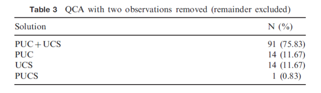

收录于合集
文献来源：Simon Hug, “ Qualitative Comparative Analysis: How Inductive Use and Measurement Error Lead to Problematic Inference, ” Political Analysis , Vol. 21, No. 2, 2013, pp. 252-265.
作者简介： Simon Hug，密歇根大学政治学博士，现任日内瓦大学政治学教授，是AJPS、APSR等数十种国际顶级期刊及Springer、Sage等知名出版社的专业审稿人，其研究兴趣集中于政治学方法论与比较政治学，精通德、法、英、意、西等多国语言。个人主页：http://www.unige.ch/ses/spo/static/simonhug/
在政文观止Poliview的往期推送中，我们多次向读者介绍和展示了定性比较分析（QCA）的技术原理及其在政治科学研究中的应用。这些文章得到了读者朋友们的热烈反响，小编身边也有许多同学热切地希望运用该技术做出学术成绩，对此我们深感欣慰。然而，作为一个专业负责并且一直致力于提供优质学术公共产品的公众号，我们有必要展示学界对于这项技术的不同声音，从而帮助读者更为谨慎和规范地掌握这项技术，避免可能引发严重后果的误判、误测和误用。因此，在本期的推送中，政观将与各位读者朋友分享一篇刊发在政治科学方法论顶级期刊Political Analysis上的文章来展现QCA研究方法的局限性以及滥用QCA的后果。
一、归纳还是演绎
QCA的核心假设在于结果可以由充分条件和必要条件的组合解释，而判断某种条件（组合）是否充分和必要则需要借助真值表来刻画其和结果之间的对应关系。因此，QCA实质上就是布尔代数辅助下的密尔方法（求同法或求异法）。许多文献在使用QCA前都会追忆密尔的伟大成就。然而不幸的是，密尔本人对于所谓密尔方法（求同法、求异法以及剩余法）的评价并不高。因为密尔认为唯有实验方法和理论指导下的演绎思维才是真正可靠的，所有的归纳方法都无法为研究者提供充分的证据。换言之，密尔方法只能对既有理论进行检验乃至排除，无法归纳出新的理论。作为密尔思想的继承者，QCA之父拉金同样推崇演绎方法。拉金认为，QCA的本质就是对既有理论在演绎过程中的检验。如果没有既定理论的指引和限制，那么对无限多的变量进行求同和求异的过程将永无止尽。
类似的，如果用定量研究的思维加以理解。没有理论指引的QCA不过是对数据的重新描述，没有任何的因果推断意义。（编者按：所谓推断就是从可观测的现象中推测无法观测的事实。然而QCA方法中的样本/案例并没有经过概率抽样，甚至无法明确其“总体”是谁，因此其结论很难向案例外延伸。所以在统计学意义上，QCA得出的任何结论都是描述性的。）而且大量的QCA文献都没有讨论遗漏变量的问题，而QCA本身也无法对此进行识别和检验。
令人遗憾的是，虽然密尔和拉金都严格地遵循演绎方法，但后世的QCA研究却常常将其抛诸脑后。大量的QCA文献既没有言明自己究竟使用了归纳还是演绎，也没有为变量的选取提供充分的理论解释。甚至有些QCA文献完全停留在对真值表和条件组合的分析和想象，进而生造出完全不具备适应性的理论。作者认为，用QCA来归纳出新理论的做法是完全不可取的。
二、误测与容错性
与扎根于概率论和统计学的定量研究不同，定性研究或多或少都带有一些决定论的色彩，因此，一个案例中一项关键指标的误测就会产生完全不同的结论。加之概念难以界定、案例数量受限，因此QCA作为一种定性研究方法，其容错性和稳健性都非常令人担忧。但绝大部分使用QCA方法写作的文献对此要么盲目乐观，要么干脆闭口不谈。
一种观点寄希望于模糊集理论。他们认为，由于突破了清晰集中非此即彼的限制，模糊集具有天然的容错性，因此模糊集可以降低QCA对于测量误差的敏感性。然而，细读拉金的著作就会发现，模糊集只能解决分级赋值问题，对于测量误差仍然束手无策。另一种观点则将视野转向贝叶斯方法，即用贝叶斯法则来修正QCA的误差。譬如先假定某个因素为“必要条件”，再通过新案例中的现实情况来计算“后验概率”。如果测量误差及其后果能被正确评估，那么这些信息确实可以修正“先验概率”。然而不幸的是，这种方法在实践中困难重重而且非常罕见。此外，有学者认为可以通过周密的案例研究来获得目标变量的精确赋值，还有学者建议在更换可疑赋值后重新进行QCA检验。然而这些方法只能在非常模糊的程度上增强研究者的信心，却无法真正识别甚至排除测量误差。
三、模拟实验的证据
至此，作者已经在理论层面探讨了QCA的局限性，那么滥用QCA到底会产生什么后果呢？作者对此进行了一项似蒙特卡洛模拟实验。实验中的数据集来自一项经典的QCA研究。如表1所示，研究者讨论了16个国家强大左翼政党（P）、强大工会（U）、社团主义工业体系（C）、社会文化同质性（S）和福利国家制度（W）的关系。“1”表示该条件或结果存在，“0”表示不存在。
根据QCA计算结果，这一真值表被转化为逻辑表达式“PUC + UCS → W”，即同时具备强大左翼政党、强大工会和社团主义工业体系，或同时具备强大工会、社团主义工业体系和社会文化同质性的国家就会产生福利国家制度。那么如果没有既定理论假设的支撑，仅凭这一真值表归纳出的结论是否可靠，误测对其干扰又有多大呢？作者对此展开了模拟实验。
首先，作者对数据集随机删除了一个案例，可以得到16个包含15个案例的新数据集。如果对这16个新数据集重新进行QCA运算就会发现路径结果发生了变化（见表2）。譬如，如果爱尔兰因为种种原因（如数据缺失）没有进入QCA分析，那么社会文化同质性（C）在产生福利国家的因果路径中就无关紧要。进一步的，如果随机删除两个案例，可以得到120个包含14个案例的新数据集。那么在这些数据集中，原始路径的解释力就进一步降低。类似的，即使不删除案例，如果仅对极少的条件赋值进行更改，QCA的计算结果也会受到极大的影响。（见表4和表5）。

由此，作者认为，上述模拟实验清楚无疑地表明，直接用真值表归纳出的结论非常不稳健，而QCA中的误测问题也必须被认真对待。QCA的滥用和误用会产生非常严重的后果，甚至会让研究者得出完全不符合事实的结论。
编后记：
为了方便读者阅读和理解，小编对文献做了较大的删节和改写。建议读者在本篇编译的基础上细读原文。
通过知网文献搜索我们不难看出，QCA在中国社会科学研究中已经不断发展起来。但是正如Simon Hug所言，对该方法的误用与滥用事实上是广泛存在的，除了赋值缺乏根据，其中最为严重的当属许多研究者直接用真值表归纳出结论。同时我们认为，在那些立足“解释”的研究中，QCA运算结果的覆盖率与一致性如果“不那么高”，则很有可能是作者在甄别解释条件时出现了问题——然而，国内很少有学者去仔细思考QCA的解释条件需要满足什么要求，于是我们不幸看到了“外部案例”成为QCA路径无法覆盖的说辞……这些问题，都需要研究者认真对待。
定性比较分析被称为“多元方法”（multi-method），这与“混合方法”（mixed method）有着显著区别——前者是将定性与定量特征融合到了同一种方法之中，而后者是就某一议题分别使用两种方法加以研究。2003年的初春，美国政治学会成立了“定性方法分会”，并在日后改名为“定性与多元方法研究分会”。作为这个共同体的重要组成部分，定性比较分析与案例研究、比较历史分析一道，已经从涓涓细流汇成滔滔江河，流遍了社会科学研究的各个角落。
学术界内定性与多元方法的研究者，联合起来！
延伸阅读
Downey, John, and J. Stanyer. “Comparative media analysis: Why some fuzzy thinking might help. Applying fuzzy set qualitative comparative analysis to the personalization of mediated political communication.” European Journal of Communication 25.4(2010):331-347. （往期推送：杀器现世！有人把模糊集QCA应用到了政治传播领域）
Grofman, Bernard, and C. Q. Schneider. “An Introduction to Crisp Set QCA, with a Comparison to Binary Logistic Regression.” Political Research Quarterly 62.4(2009):662-672. （往期推送：还有这种操作？十分钟学会QCA，顺带复习Logistic回归）
QCA研究在中国
1. 引介与综述
何俊志：《比较政治分析中的模糊集方法》，《社会科学》，2013年第5期
刘丰：《定性比较分析与国际关系研究》，《世界经济政治》，2015年第1期
李蔚、何海兵：《定性比较分析方法的研究逻辑及其应用》，《上海行政学院学报》，2015年第5期
郝诗楠：《质性比较分析方法及其在政治学研究中的应用》，《国外理论动态》，2016年第5期
杜运周、贾良定：《组态视角与定性比较分析（QCA）：管理学研究的一条新道路》，《管理世界》，2017年第6期
2. 实证研究
黄荣贵、桂勇：《互联网与业主集体抗争：一项基于定性比较分析方法的研究》，《社会学研究》，2009年第5期
唐睿、唐世平：《历史遗产与原苏东国家的民主转型——基于26个国家的模糊集与多值QCA的双重检验》，《世界经济与政治》，2013年第2期
王程韡：《腐败的社会文化根源:基于模糊集的定性比较分析》，《社会科学》，2013年第10期
迟永：《美国介入领土争端的行为——基于模糊集定性比较分析的解释》，《世界经济与政治》，2014年第10期
李蔚：《飘摇的青春:在日中国“新”技术移民主观幸福感研究——基于定性比较分析的方法》，《甘肃行政学院学报》，2015年第2期
黄荣贵、郑雯、桂勇：《多渠道强干预、框架与抗争结果——对40个拆迁抗争案例的模糊集定性比较分析》，《社会学研究》，2015年第5期
郝诗楠、高奇琦：《分离主义的成与败：一项基于质性比较分析的研究》，《世界经济与政治》，2016年第6期
程聪、贾良定：《我国企业跨国并购驱动机制研究——基于清晰集的定性比较分析》，《南开管理评论》，2016年第6期
释启鹏、韩冬临：《当代社会运动中的政权崩溃——“颜色革命”与“阿拉伯之春”的定性比较分析》，《国际政治科学》，2017年第1期
高新宇、秦华：《“中国式”邻避运动结果的影响因素研究——对22个邻避案例的多值集定性比较分析》，《河南大学学报（社会科学版）》，2017年第4期
李利文、方勇：《内生性资源、叠加式外推与社会治理创新强度——对91个典型案例的模糊集定性比较分析》，《上海交通大学学报(哲学社会科学版)》，2017年第4期
章文光、王耀辉：《哪些因素影响了产业升级?——基于定性比较分析方法的研究》，《北京师范大学学报（社会科学版）》，2018年第1期
释启鹏、陆屹洲：《“两种传承”的实证检视：以欧洲极右翼政党兴起为例》，《比较政治学研究》，2018年第1期


政观
感谢您支持学术公益
微信扫一扫赞赏作者 __赞赏
已喜欢，对作者说句悄悄话
取消 __
发送给作者
发送
最多40字，当前共字
上一页 1/3 下一页
长按二维码向我转账
感谢您支持学术公益
受苹果公司新规定影响，微信 iOS 版的赞赏功能被关闭，可通过二维码转账支持公众号。